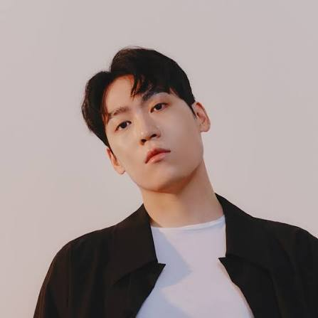
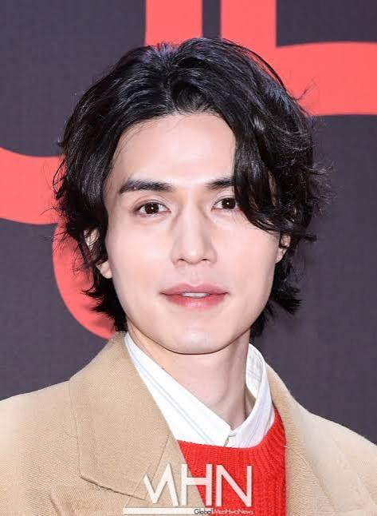
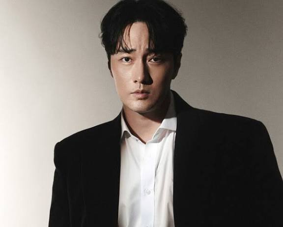

둥근형
둥근형은 가로와 세로 비율이 비슷하고 턱선이 부드러워, 전체적으로 선하고 어려 보이는 동안 이미지를 가진 얼굴형인데요. 대표적인 연예인으로 송중기, 정해인, 디오(도경수) 님이 있습니다.
얼굴 골격이 부드럽기 때문에 이목구비가 흐릿해 보이거나 얼굴이 넙데데해 보일 수 있습니다. 그래서 세로 선을 강조하여 갸름해 보이게 하고, 직선적인 느낌을 더해 남성미를 살려주는 헤어스타일링을 추천해 드립니다!
추천 스타일링 전략 (세로 강조, 슬림 라인)
- 아이비리그컷 / 리젠트컷 (이마를 시원하게 드러내 세로 길이감 확보)
- 포마드 스타일 (윗머리 볼륨을 살려 시선을 위로 분산)
- 옆머리 다운펌 (옆 부피를 최대한 줄여 슬림한 라인 만들기)
긴형



긴형은 가로 폭에 비해 세로 길이가 길어, 지적이고 성숙하며 시크한 이미지를 주는 얼굴형인데요. 대표적인 연예인으로 김우빈, 강동원, 이광수 님이 있습니다.
이마를 완전히 드러내거나 옆머리를 너무 짧게 칠 경우 얼굴이 더 길어 보일 수 있습니다. 그래서 위쪽 볼륨은 적당히 조절하고 옆 볼륨을 채워 밸런스를 맞춰주는 헤어스타일링을 추천해 드립니다!
추천 스타일링 전략 (세로 축소, 옆 볼륨 확장)
- 댄디컷 / 시스루 댄디컷 (앞머리로 이마를 덮어 얼굴 길이 축소)
- 소프트 투블럭 (옆머리를 하얗게 밀지 않고 기장감을 남겨 채우기)
- 가르마펌 (5:5) (가로 비율을 넓혀 보여 긴 얼굴 보완)
각진형
각진형은 턱선과 광대가 발달하여 강인하고 남성적인 분위기를 물씬 풍기는 얼굴형인데요. 대표적인 연예인으로 이동욱, 박서준, 여진구 님이 있습니다.
하관이 강해 자칫 인상이 너무 강하거나 딱딱해 보일 수 있습니다. 그래서 각진 턱과 광대를 부드럽게 커버할 수 있는 곡선감(Curve)과 질감 처리가 들어간 헤어스타일링을 해주시는 걸 추천해 드립니다!
추천 스타일링 전략 (곡선, 부드러운 커버)
- 섀도우펌 (S컬 웨이브로 강한 인상을 부드럽게 중화)
- 리프컷 (긴 기장감으로 광대와 턱 라인을 자연스럽게 감싸기)
- 애즈펌 (이마를 살짝만 노출해 부드러운 분위기 연출)
계란형
계란형은 얼굴의 가로, 세로 비율이 이상적이고 턱선이 갸름하여 대부분의 헤어스타일을 완벽하게 소화하는 축복받은 얼굴형인데요. 대표적인 연예인으로 차은우, 송강, 뷔 님이 있습니다.
장점인 얼굴형을 너무 가리지 않는 것이 중요합니다. 이마를 드러내어 이목구비를 강조하거나 트렌디한 스타일을 과감하게 시도해보시는 걸 추천해 드립니다!
추천 스타일링 전략 (장점 드러내기, 트렌디함)
- 가일컷 / 드롭컷 (트렌디하면서도 얼굴형의 장점을 살림)
- 시스루 댄디컷 (꾸민 듯 안 꾸민 듯 자연스러운 매력)
- 히피펌 / 베이비펌 (다양한 컬 스타일도 무리 없이 소화)